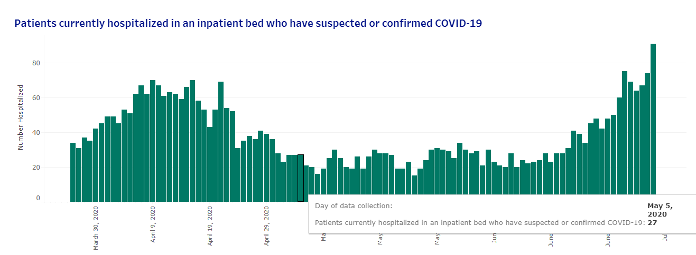
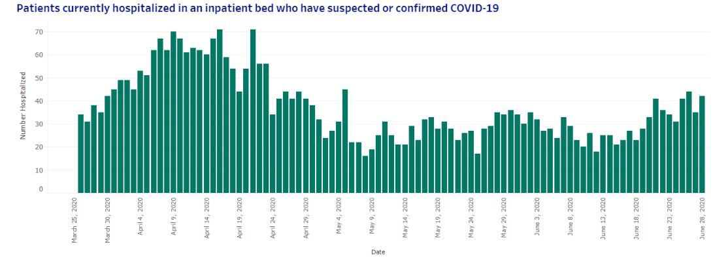

[ID]As of July 8 Idaho's revised all daily hospitalizations
State or US: Idaho
Describe the problem On July 8, if not before, Idaho updated history of daily hospitalizations, such that what COVID Tracking Project reports now doesn’t match the state’s dashboard. It appears COVID Tracking Project first captured the history with https://github.com/COVID19Tracking/issues/issues/572.
e.g. Idaho’s now reporting daily hospitalizations on May 5 2020 = 27, but CTP reports 45 at https://covidtracking.com/data/state/idaho. That’s a bit of an exception, but almost every day’s number has changed. Generally March-May numbers are down, and more recent numbers are up.
It appears daily ICU history also changed, but I didn’t investigate further.
Link to data source State COVID dashboard: https://public.tableau.com/profile/idaho.division.of.public.health#!/vizhome/DPHIdahoCOVID-19Dashboard_V2/Story1 tab “Hospitalizations”
Here’s a screenshot of the daily hospitalizations chart and the May 5 example point as of now:

Comments
CSVs of data. Hospitalizations and ICU, ICU starts only end of May, and includes only confirmed patients, hospitalization is confirmed + suspected, goes back to end of March
confirmed_and_suspected_in_hospital_20200714.txt confirmed_in_icu_20200714.txt
Idaho updated this data again today, 7/15. IDHW claims they update this particular data Monday, Wednesdays, Fridays at 5PM Mountain, and so far that’s been mostly accurate. I do see a historical difference again, but perhaps not as far back, vs. what @space-buzzer provided on 7/14. I’ll attach the latest files here since I have them, but latest can be downloaded by:
- click on the desired visualization at dashboard link provided in issue (Tableau gives no visual feedback when you do this, but it gives the next step context)
- click the “Download” button on the toolbar along the bottom of the dashboard
- click “Data”
- click “Download all rows as a text file”
S_and_C_Hospitalized_Full_Data_data-20200715.csv.txt C_in_ICU_data-20200715.csv.txt
For whoever’s planning out work on this
-
an Idaho Statesman article states notes numbers changed in the past because “Idaho’s hospitals and Health and Welfare also spent time updating numbers for prior days, when necessary, to make sure the records were as accurate as possible, according to Idaho’s deputy state epidemiologist.”
-
the same article, and the footnote on the dashboard page, indicates this data was derived from NHSN, so given the change over to HHS Protect, it may be a while before this particular data updates beyond the update I mentioned today.
Worksheet (in 3 forms for redundancy :)): https://docs.google.com/spreadsheets/d/1RvgAucNP8G4opp4sbvmzbAcbJQZ7EiUC-6aN7V2ktVk/edit#gid=2035568933 ID - Analysis GH#593.txt backfill_ID_2020_0716.pdf
Generally updated numbers (for hospitalizations and ICU) look good, but date alignment is an issue. Data Entry has been using the last day in the graph as “today”, but it’s actually ~3 days old. This update shifts things back to the actual dates on the graph, which results in ~zeros~ carrying forward of 7/13 data to more recent days.
As DE continues to enter data, they will likely do the same, so we’ll have a flat line for a while.
Update complete!
To add a little more context, in case helpful, here’s a screenshot of the same chart from the dashboard I captured July 3. The shape is pretty close, but you can see that difference on May 5 pretty easily.
